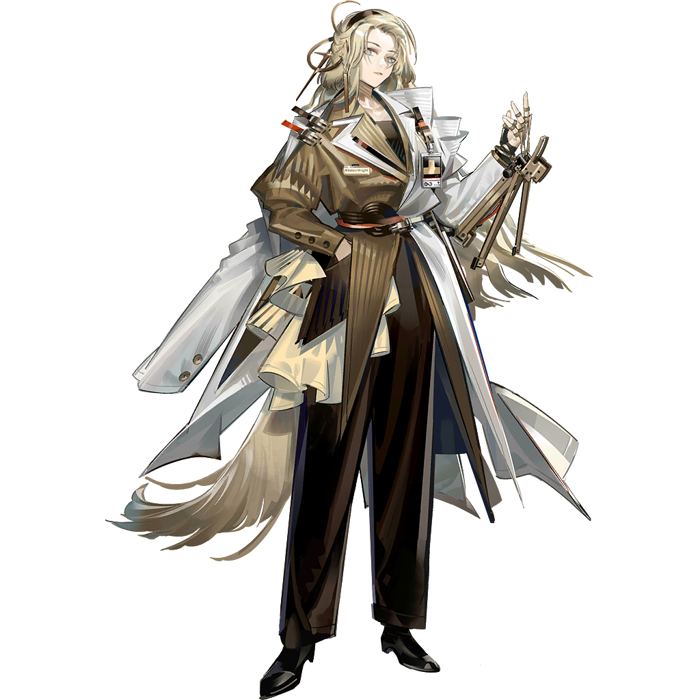

POWERED BY RHINE LAB
RHINE LAB
SYNTHESIZE INFORMATION
ANALYSIS OS
POWERED BY RHINE LAB
克丽斯腾·莱特
莱茵生命总辖构件科主任兼联合创始人，特里蒙理工大学高能物理博士，出身于著名的莱特家族。塞雷娅称呼其为“总辖”。
与塞雷娅是大学同学，又是最要好的朋友，心有灵犀，互相认为对方是唯一理解自己的人。两人一拍即合，一同创建了莱茵生命。 但在炎魔事件后，克丽斯腾被塞雷娅指出其行为越过了她的底线，导致塞雷娅与克丽斯腾决裂，离开莱茵生命。
359号基地事件期间，斐尔迪南企图架空克丽斯腾的权力，但在塞雷娅与克丽斯腾的磋商下，斐尔迪南的图谋最终失败。
塞雷娅
塞雷娅，前莱茵生命防卫科主任。于生命科学，微生物学，源石技艺等领域皆有建树， 同时于歼灭战，要员保全，异常事态处理等任务中表现出强大实力。
作为一个高水平科学家的同时，塞雷娅还具有极其强大的战斗力和身体素质。塞雷娅能操纵钙元素组成极其坚硬的珐琅质， 并通过调整其中的晶体结构改变其性质，以在不同情况下使用。
与克丽斯腾是大学同学，与其一起创办莱茵生命。
在莱茵生命就职期间，塞雷娅主要负责维护公司内部秩序，监视特殊项目和处理危险实验目标的工作。 经历了伊芙利特引发的意外事件(即炎魔事件)之后，塞雷娅与克丽斯腾产生了分歧，并暂时离开了莱茵生命。 同时在事件中与赫默产生隔阂，导致二人关系冷淡。
在359号基地事件中，塞雷娅与克丽斯腾联手，成功阻止了斐尔迪南的图谋。 事件结束后赫默和塞雷娅终于冰释前嫌，和伊芙利特团聚。
伊芙利特
伊芙利特，前莱茵生命医疗对象，重度感染者。拥有极高的源石适应性，伴随有多发性点火现象。 现于罗德岛接受治疗，由医疗干员赫默担任监护与担保人。
哥伦比亚国防部试图借助炎魔碎片复刻出炎魔并制造超级士兵，便与莱茵生命达成协定，操作海顿制药对伊芙利特进行活体实验。 然而实验中伊芙利特失控，大爆炸毁灭了海顿制药，唯一的存活者只有伊芙利特。其后，伊芙利特被转移至莱茵生命进行与炎魔碎片嵌合实验。 该项目由莱茵生命结构科主持，使用的名义是“嵌合疗法”。实验期间，伊芙利特结识了赫默、塞雷娅、缪尔赛思等人。 但赫默出于救下伊芙利特的想法，给伊芙利特输入了假死药剂，导致在一次实验中伊芙利特意识昏迷且被炎魔碎片控制，造成了“炎魔事件”。 伊芙利特被持“坚城”装备的塞雷娅击昏，被误以为塞雷娅将牺牲伊芙利特保全莱茵生命的赫默带到罗德岛进行治疗。
赫默
赫默在莱茵生命中所在的部门是结构科（STRUCTURAL SECTION），任职研究员。该科室的主任是赫默的老师阿伦茨·帕尔维斯（Ahrens Parvis）。 赫默在感染矿石病后被帕尔维斯举荐进入莱茵生命，帕尔维斯也积极支持了她的实验。
赫默和曾经隶属于莱茵生命的干员塞雷娅共同进行过一项以伊芙利特为实验对象的实验，实验失败后导致了「炎魔事件」的爆发。 塞雷娅在镇压实验对象后投身于罗德岛， 在赫默来到罗德岛后二人也常常由于理念不合而争吵。
在359号基地事件中，赫默理解了塞雷娅并且主动寻求合作，最终双方成功破冰。
缪尔赛思
缪尔赛思，莱茵生命生态科主任，哥伦比亚生命科学与环境科学领域专家，主要研究方向为源石技艺的应用。 她是莱茵生命的一员，与克丽斯腾·莱特、塞雷娅、赫默等人一同工作。
缪尔赛思小姐是哥伦比亚学界近年来备受关注的天才科学家，在不到三十的年纪便已跻身莱茵生命十杰之列， 担任生态科主任，以及特里蒙多所大学的客座讲师。 近十年，缪尔赛思小姐及其所带领的科研团队在生态学、遗传学、植物生物化学、植物生理学等多个领域所取得的研究成果， 极大地推动了哥伦比亚生命科学与环境科学的发展。
多萝西
多萝西，莱茵生命源石技艺应用科主任,她对源石技艺本身的理解毋庸置疑，而在源石技艺的应用上更是炉火纯青。
多萝西·弗兰克斯女士在罗德岛舰内的初次亮相，是莱茵生命初步平息发生在特里蒙城郊的骚乱， 能量科主任斐尔迪南·克鲁尼因涉嫌非法实验而正式遭通缉之后不久。干员多萝西正是在这样的时间点， 带着一份于双方都有益的合作项目，促成了莱茵生命与罗德岛目前为止最高等级的合作——由一科主任亲自负责，并执行派遣。
斐尔迪南·克鲁尼
莱茵生命能量科主任，星源的老师。十分自信且富有进取心，多年来为莱茵生命争取了丰富的资源支持， 极大程度推进了各科研究的发展。十分重视莱茵生命的发展，但行事激进。
企图架空总辖的权力，与军方达成合作，意图实现扩张莱茵生命的计划。 359号基地事件期间通过基地命令莱茵防卫科成员给359号基地的拓荒者注射“递质”， 之后利用分发给拓荒者的医疗环中植入的感受器操控了“唤醒”的出现。
计谋失败后被军方通缉，随后逃脱，在逃生通道遇上了破坏了其逃生车辆的霍尔海雅， 被迫穿上霍尔海雅为其准备的动力机甲走上荒野。在荒野上遇到意图复仇的拓荒者，生死未知。
阿伦茨·帕尔维斯

莱茵生命结构科主任，赫默的老师，曾从事相关研究四十余年，性格温和，但对自身实验成果相当执着。 曾收留了赫默，并力排众议帮助赫默进入莱茵生命。主导了“炎魔计划”的实施， 以进行“嵌合疗法”为掩饰给伊芙利特体内植入了炎魔碎片，但实验一度被塞雷娅阻止，在总辖的干涉下实验得以继续进行。 在其误导下，赫默与塞雷娅之间开始彼此不信任。处事圆滑，也因此在359号基地事件中未受到波及。